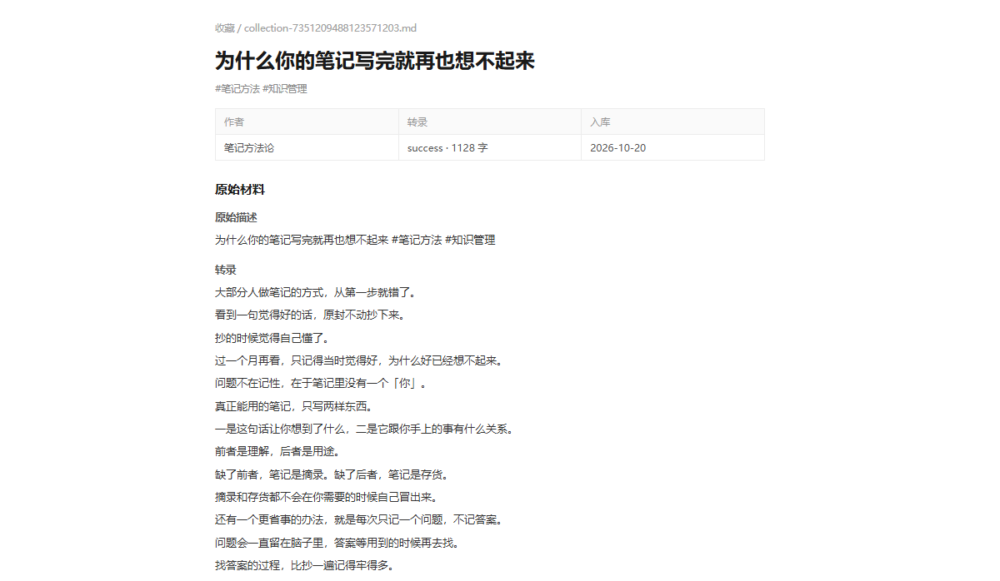
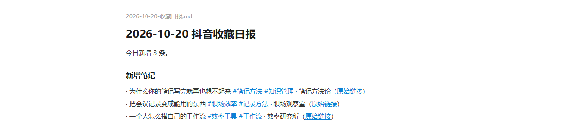
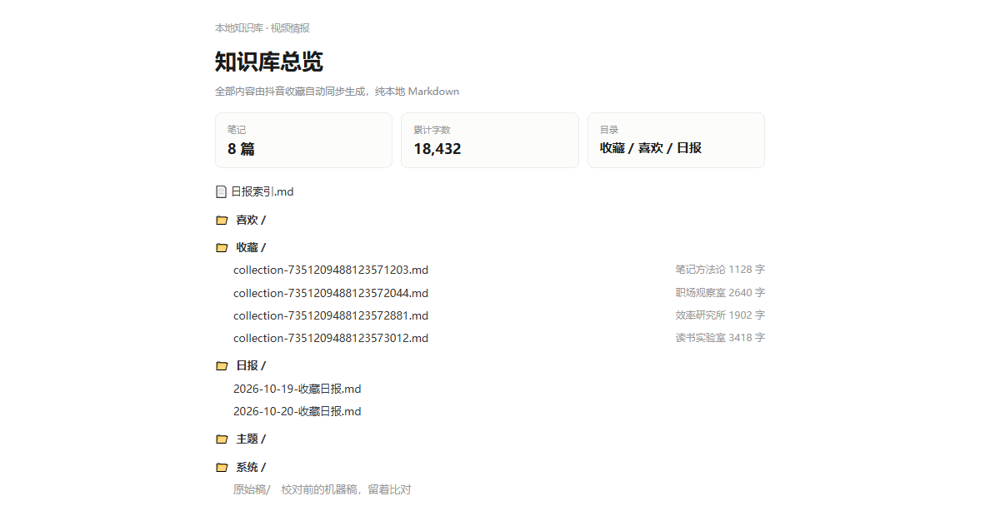

手机上刷抖音随手点收藏，电脑上跑一次，视频里的口播内容变成文字笔记和日报，存进你自己的知识库。
自动把收藏的视频下载下来，用本地 Whisper 模型跑出逐字稿，不用手动听写。
每条视频一篇 Markdown，标题、作者、原链接、逐字稿齐全，按收藏和喜欢分开存放。
汇总当天新增内容，自动过滤掉没有口播的条目，双链一点就跳转到对应笔记。
把整个 video-daily-intel 文件夹放到 用户目录/.workbuddy/skills/ 下。
双击 一键安装(Windows).bat，或者让 WorkBuddy 执行 python scripts/install.py。两三分钟，不动系统环境；缺 ffmpeg 会自动补上。
打开 WorkBuddy，说「启动视频情报局」，跟着向导走：定知识库位置、扫码、跑一次。
启动视频情报局| 你想干的事 | 就说这句 |
|---|---|
| 整理新收藏 | 立即同步收藏，出今天的早报 |
| 拆解某条视频 | 帮我拆解这个视频：https://v.douyin.com/xxxx/ |
| 换知识库位置 | 把知识库换到 D:\我的笔记 目录 |
| 校对逐字稿 | 把这批里专业名词多的那几篇校对一遍，人名术语核准 |
| 整理知识库 | 整理一下知识库，按主题归一下类 |
| 看哪些还没处理 | 看看库里哪些笔记还没校对、哪些标点丢了 |
纯音乐、纯字幕、图文、剧情片段，模型转不出内容，要么空白要么只有两三个字。这类视频抓了等于白抓，日报会自动跳过它们。
有 NVIDIA 显卡时约 6 倍速，纯 CPU 约 2 倍速。转写时别开大型游戏，显卡被占住速度会掉到十分之一，同样的活可能从十几分钟拖到一个小时。
方言、多人抢话、背景音乐只是小问题。真正麻烦的是术语和人名：默认模型没有历史、法律、医学这些知识，全靠音猜。术语越密集的视频，机器稿里错的专名越多，这类要留出时间整篇核对。
口语叙事、影视解说直接用；专业内容转完让 AI 通读校对一遍，再拿去引用。换更大的模型能少错，但需要 2 GB 以上空闲显存，纯 CPU 跑慢到 1.7 倍实时。
工具负责抓取、转写、落盘，以及告诉你哪篇还没校对。至于这批视频讲了什么、哪些值得留着、能不能提炼成方法，是 WorkBuddy 在对话里读完逐字稿再写的。视频里没干货，它也写不出来。
按主题归类这件事能半自动：脚本按话题标签先聚一遍，给出分组草稿，剩下的评价和取舍由人定。
winget install Gyan.FFmpeg。知识库/ ├── 收藏/ │ ├── collection-7496....md ← 每条视频一篇，含完整逐字稿 │ └── collection-7684....md ├── 喜欢/ │ └── like-7675....md ├── 日报/ │ └── 2026-10-21-收藏日报.md ← 当天新增汇总 ├── 00_总览.md ← 自己维护的索引，按主题分组 ├── 主题/ ← 同一话题够 3 篇才建 ├── 分析/ ← 要出文章时才写 ├── 模板/ └── 系统/ └── 原始稿/ ← 校对前的机器稿，留着比对
下面是产出长什么样。起点是手机刷到想留的视频点个五角星，电脑上打开抖音「我的 · 收藏」就能看到它们，同步抓的就是这一页的列表。



收藏/ 和 喜欢/ 子目录，日报单独一栏。时间长了就是一个能搜、能跳转、能丢给 AI 读的本地库。